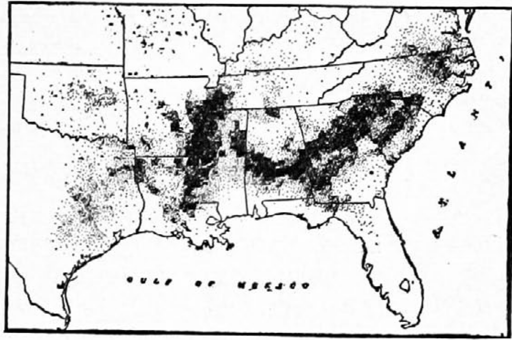
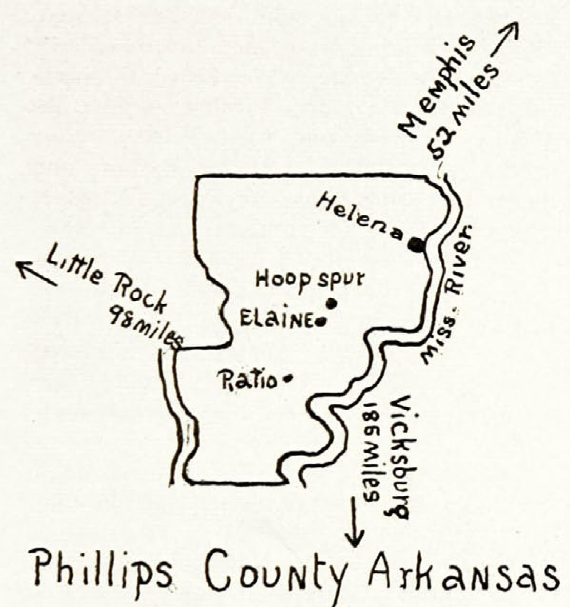
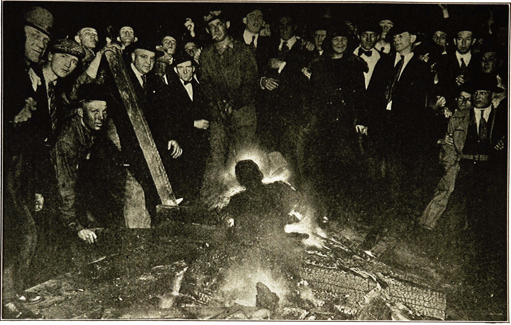

The Real Causes of Two Race Riots (1919)
Contents
The Real Causes of Two Race Riots (1919)
Arkansas
The Thirteenth Amendment to the Constitution of the United States has never been enforced thoroughly. This means that involuntary servitude is still wide spread in the southern United States. There are even vestiges of the slave trade in the convict lease system and the arrangements for trading tenants. On the whole, how ever, the slavery that remains is a wide spread system of debt peonage and a map of the farms operated by colored tenants shows approximately the extent of this peonage.
The Arkansas riot originated in the attempt of the black peons of the so-called Delta region, (that is the lowlands between Tennessee, Mississippi, Arkansas, and Louisiana) to raise their income. The center, Phillips County, Ark., has 692,000 square miles of land and its chief city is Helena. In 1910 there were 33,535 inhabitants in the country, of whom 26,354 or 78.6% were Negroes. The county is predominately a farming community with $9,000,000 worth of farm property, and two-thirds of the value of all the crops is represented by the cotton crop. Of the 9,835 males of voting age, 7,479 are Negroes, and of these 5,510 could read and write; nevertheless, all the political power is in the hands of the 4,000 white voters, Negroes having no representation even on juries.
The Negroes are the cotton raisers. Of the 30,000 bales of cotton raised in 1909, they raised 25,000. Most of the Negro farmers are tenants. In the whole county there were, in 1910, 587 colored owners and 1,598 colored tenants. These tenants farmed 81,000 acres of land and raised 21,000 bales of cotton. For the most part the method of dealing with these tenants is described by a local reporter, as follows:
All the white plantation owners had a system whereby the Negro tenants and sharecroppers are “furnished” their supplies. They get all their food, clothing, and supplies from the “commissary” or store operated by the planter, or else they get them from some store designated by him. The commissary or store charges from twenty-five to fifty per cent. interest on the value of the money and supplies advanced or furnished. If any one doubts this statement, let him ask any planter or storekeeper. As a whole, they admit it. They boast that the commissary is the safest and best paying department of the plantation.
A northern white man bought a big farm in Mississippi. Of course, he had a “commissary.” When the season was over, he complained that he had made but little money. His southern neighbors asked him questions as to his methods etc., and found that he had charged the cost price for his supplies and had added ten per cent. for profit, and had settled with his hands at the actual market value of the cotton at the time it was sold. They said, “Hell, man, you haven’t got the right system. You don’t make money down here on your cotton except in good years. You make your money off your commissary. Besides, never give your n⸺s a statement of their accounts. If you do, you will ruin every n⸺ in the country. Just tell them what they’ve got coming and pay them off and don’t let ‘em argue or ask any questions.”
That is only part of the “system.” The landlord takes the cotton, gins it, sells it at the highest market price, and settles with his tenants at the lowest market price for their “share” of the crop. They play both ends against the middle and get the Negro going and coming. If a Negro objects, he is classed as “an insolent n⸺” or a “bad n⸺.” He is beaten by the “agent” or “boss man” and either driven off the place, or else he admits he is wrong, becomes thoroughly cowed, and then is allowed to remain.
Several years ago the United States Government started to investigate alleged peonage among Italian laborers in the South. To their surprise and chagrin they ran across very little Italian peonage, but a great deal of Negro peonage. In Phillips County a white lawyer, named Bratton, prosecuted a number of cases for the government and convicted a half-dozen planters.
Recently the price of cotton has, as you know, greatly increased. It was about nine cents a pound in 1904, eleven cents in 1915, twenty cents in 1916, and twenty-eight cents in 1917. The price at present is forty cents. This rise in price has made it difficult to keep the Negroes in debt, and, therefore, they have become restive in their demands for itemized settlements.
That was the situation in 1918. Many Negroes had their cotton taken by the planter in October, 1918, but did not get a settlement until July, 1919. They had never been able to get a statement of their accounts from month to month, hence when July came, how could a man dispute an account made the year before? How could he say that he did not get certain supplies in June, 1918, when he did not know until July, 1919, what he was charged with?
The Negroes got tired of it. Sixty-eight of them got together and decided to hire a lawyer and get statements of their accounts and a settlement at the right figures. They decided not to hire a Negro lawyer, because they knew that it meant mobbing and death to any Negro lawyer who would have the presumption to take one of these white planters to court. They were afraid to trust any white lawyer in Phillips County for fear their attorney would lay down on them and fail to get results after getting their money. They canvassed the situation and found that the firm of Bratton and Bratton, white, of Little Rock, was a good, reliable firm, and would fight for a Negro client to the last. They made contracts with this firm to handle all the sixty-eight cases at fifty dollars each in cash and a percentage of the moneys collected from the white planters. Also some of these Negroes and their friends planned to go before the Federal Grand Jury and charge certain white planters with peonage. These men had meetings from time to time for the purpose of collecting the moneys which were to be paid in advance and to place the same in the treasury; also to collect evidence and gather facts which would enable them to successfully prosecute these cases. These meetings had to be secret to prevent harm and danger to the men concerned and to their families.

The “Black Belt”
Here four million Negroes live and at least 500,000 of these are still held in involuntary servitude, in defiance of the 13th Amendment.
Meanwhile another organization sprang up. The Negro cotton pickers organized a union to raise the wages of cotton-pickers and refused to pick cotton until they received higher wages for their work. These meetings were secret. Also, at Elaine were a great many Negroes who worked in the saw-mills and who received fair wages, and who refused to allow their wives and daughters to pick cotton or to work for a white man at any price. They did this as a measure of protection to their wives and daughters, who were subject to the advances and insults of white men on the cotton farms.
All these movements became known to the white planters and they resolved to break up the whole business and put the Negroes “in their place.” It is the unwritten law of the cotton planter that his Negro tenants “must not take the boss man to law.” Woe be unto the “insolent n⸺” who attempts it. The white men also learned that Negroes were buying guns and plenty of ammunition. The merchants at Helena reported large sales and the express offices also reported shipments of rifles and shell to Negroes. The Negroes had read and heard all about the East St. Louis, Washington, and Chicago riots, and knew of the secret Ku Klux Klan movements among the white people in the South. They knew that race hatred on the part of white people was increasing by leaps and bounds and that riots were liable to break out in that section at any time. They were simply preparing to defend their homes and lives, for experience had taught them that Negroes have no protection at the hands of the law. The police and deputy sheriffs either refuse to check the mobs, or else they join hands with the mobs. The assembling of arms was for purely defensive purposes. No Negro was fool enough to think of an “insurrection” against white people.
While the white men were meeting secretly and discussing means of “nipping the n⸺s in the bud,” matters came to a head very suddenly in an unexpected way. On Sunday, before the riot, John Clem, a white man, from Helena, came to Elaine loaded up and drunk on “white mule.” He proceeded to bully and terrorize the whole Negro population of over four hundred people by continuous gun play. The Negroes, to avoid trouble, got off the streets, and phoned to the sheriff at Helena. He failed to act. Monday, Clem was still on a rampage. The Negroes avoided trouble, because they feared that his acts were a part of a plan to start a race riot. Tuesday, some Negroes were holding a meeting in a church at Hoop Spur. A deputy sheriff and a “special agent,” white, and a Negro trusty came by in an auto. The white men stopped and proceeded to “investigate” the meeting. They were refused admittance. They attempted to break in and fired into the building. Some Negroes returned the fire, killing the special agent and wounding the deputy sheriff, so it is said. However, when the Negro trusty reported the shooting, he said that they had been fired upon from ambush by two white men and a Negro. The wounded deputy also first reported that the party had been fired upon from ambush by two white men and he was quite sure he saw a Negro running from the scene. Later all mention of the white men was carefully avoided and suppressed, and the entire blame was laid upon the Negroes at the church and it was charged that all of them were armed, that the white men were proceeding peaceably on the road and only got out to fix their car, which just happened to break down right in front of this particular church, and that the Negroes fired on them without any provocation whatever. Later another white man was fired on, and it was claimed that he just happened to be coming along the road an hour later and was shot by Negroes who were at the same church.
It never seemed for a moment unreasonable to the white men to believe that the Negroes would kill and wound white men at the church and then deliberately stay there for an hour or two longer for the purpose of killing another white man. Every sane man knows that those Negroes would have fled from the scene after the first shooting, if they had been guilty.
Anyhow, the hue and cry was raised. “Negro uprising,” “Negro insurrection,” etc., was sent broadcast. The white planters called their gangs together and a big “n⸺ hunt” began. They rushed their women and children to Helena by auto and train. Train loads and auto loads of white men, armed to the teeth, came from Marianna and Forrest City, Ark., Memphis, Tenn., and Clarksdale, Miss. Rifles and ammunition were rushed in. The woods were scoured, Negro homes shot into, Negroes who did not know any trouble was brewing were shot and killed on the highways.
Telegrams were sent to Governor Brough. He called for Federal troops and five hundred were rushed from Camp Pike, armed with rifles, cannon, gas masks hand grenades, bombs, and machine-guns. The Colonel took “charge of all strategic points,” and “mobilized his men to repel the attack of the black army.” The country was scoured for a radius of fifty to one hundred miles, covering all of Phillips and part of adjoining counties, for “Negro insurrectionists.”

The soldiers arrested over a thousand Negroes, men and women, and placed them in a “stockade” under heavy guard and kept them there under the most disgusting, unwholesome, and unsanitary conditions. They were not allowed to see friends or attorneys but all of them had to be separately and personally “investigated” by the army officers and a white “committee of seven.” Even after “investigation” had proven completely that a Negro was wholly innocent, still no Negro was released until after a white man had appeared and personally “vouched” for him as being a “good n⸺.” The white man was usually a planter or employer and they refused to “vouch” for the Negroes until the Negroes had given assurance and “guarantees” as to work and wages. Finally, all but two or three hundred were released. All Negroes who owned their own farms or were otherwise independent, were held, as a rule, because no white man would vouch for them. In addition to those held by the soldiers, over three hundred were arrested and placed in the jail at Helena, charged with murder and rioting, and refused bond. They were not allowed to see friends or attorneys and were “investigated” by the “committee of seven.” This committee was secret at first. Its membership was not disclosed, but was organized and did its work with the direct sanction of Governor Brough.
The next day, after the first killing of the special agent, which occurred at Hoop Spur, 0. G. Bratton, a son of U. S. Bratton, arrived at Ratio. There he met many Negroes who had employed the firm of Bratton & Bratton to obtain their settlements. The Negroes represented the sixty-eight tenants on the Fairthy plantation. They had had no settlement of their 1918 cotton crop until July, 1919, and then no itemized account. Two carloads of their 1919 crop were about to be shipped without settlement and they determined to take the matter into court.
About fifty of them began to pay the cash fees agreed upon. Many had no cash, so they offered him their Liberty Bonds, which he accepted. While collecting this money and giving receipts, a crowd of white men, who were engaged in the “n⸺ hunt,” came upon him. They arrested Bratton and all the Negroes with him and sent them to jail at Helena, where they were imprisoned on charges of “Murder,” and held without bond.
Bratton was on the train on his way to Ratio, which is twelve miles from Hoop Spur, and he and the Negro clients had not yet heard of the trouble when they met to close up the payment of the cash fees intended for his firm. All this time the white press of Arkansas kept up a hue and cry to the effect that Bratton was there “inciting an uprising of the Negroes and teaching them social equality.” The feeling was so bitter against young Bratton that there were grave threats and fears of his being lynched. The Governor ordered special guards sworn in, patrols were stationed about the jail, and only the utmost precautions prevented the lynching of a man who was not even a lawyer and whose only crime consisted in collecting fees for his father’s firm. It is now openly admitted that Bratton is clearly innocent of any part in the trouble, still he was held thirty-one days without bond in jail and then released without trial, because his father was about to obtain justice for Negro tenants.
The saddest and worst feature of the whole miserable slaughter of Negroes was the killing of the four Johnston brothers. They were sons of a prominent and able Negro Presbyterian minister, who is now dead. Their mother is a very prominent woman and was formerly a school teacher. Dr. D. A. E. Johnston was a successful dentist and owned a three-story building in Helena. One brother fought in France and was wounded and gassed in the battle of Chateau-Thierry. Dr. Louis Johnston was a prominent physician and lived in Oklahoma. He had come home on a visit.
On the day of the first trouble the four brothers had gone squirrel hunting early that morning and started for home in the evening, wholly ignorant of the trouble at Hoop Spur. While they were miles out in the woods hunting, word of the trouble reached Helena. A merchant told the deputy sheriffs and posse that he had sold some shells to the Johnstons a day or so before the trouble.
A crowd of men in an auto went to hunt for the Johnstons. They met them returning from the hunt. These white men were supposed friends of the Johnstons. They told them of the trouble and a riot was in progress and that it would be dangerous for any Negro to be on the country roads, especially armed. The Johnstons told them they had just been hunting and had nothing but shot-guns and squirrel shot. They were advised by their friends to turn back and go home by a train that would pass a little station several miles down the road. They took this advice and went to the station to go by rail to Helena. They left their car with a friend, whom they told of the situation. They had bought their tickets and were on the train when up rolled a car with some deputies. They arrested three of the men and took them from the train. The fourth brother, from Oklahoma, also got off. The officers had with them a man named Lilly, a friend of another white man with whom Dentist Johnston had had trouble, the week before. When Dr. Johnston got off the train, the officers told him to go back. He refused, saying, “These men are my brothers. If you arrest them, I will go too.” Then the officers said, “Well, if you are one of the Johnston brothers, we want you, too.” They then arrested the Oklahoma man, whose only crime was that of being a brother to the other three.
The men were loaded into an auto and the car went back down the same road they had come over. After going a few miles, a crowd of white men appeared, led by the very “white friends” who had warned the Johnstons to take the train. They had telephoned or sent word to the officers as to where they could get the Johnstons. As the mob approached, Lilly and the officers began to get out of the auto. The Johnstons then saw that they had been led into a trap by their supposed “white friends.” They were handcuffed, but they tried to put up a fight. Just as Lilly was climbing out of the car, preparing to turn the helpless men over to the mob, Dr. Johnston, although shackled, managed to grab Lilly’s pistol from his hand and shot him. The officers and the mob then shot the men literally to pieces. They were sowed with bullets so much so that their faces had to be covered at the funeral, and parts of their bodies were in shreds. The noble mother had to endure the terrible ordeal of seeing four of her fine, promising sons buried in one grave.
The main results of the whole miserable business are as follows: five white men and between twenty-five and fifty Negroes were killed in the riots; the stench of dead bodies could be smelled two miles. One thousand Negroes were arrested and one hundred and twenty-two indicted. Evidence was gathered by a committee consisting of two planters, a cotton factor, a merchant, a banker, the sheriff of the county, and the Mayor of Helena. They are said to have used electric connections on the witness chair to scare the Negroes. Sixty-six men have been tried and convicted-twelve sentenced to death, and fifty-four to penitentiary terms. The trials averaged from five to ten minutes each; no witnesses for the defense were called; no Negroes were on the juries; no change of venue was asked.
The work of “cleaning up” our people is not yet finished. The Grand Jury is at work and hundreds are to be indicted on charges of murder, rioting, conspiracy, etc. White lawyers at Helena are preparing to reap a harvest of fat fees from Negroes against whom there is no evidence, but who have saved money and property and Liberty Bonds. The Negroes are to be stripped to the bone.
The Negroes in the Black Belt are much demoralized, discouraged, and depressed. Hundreds are preparing to leave. Many Negro leaders, who have stood by the white people and who have counseled their race to stay here, now have not a word to say and many of them are also preparing to wind up their affairs and get out of the South. Negroes here live in fear and terror, afraid even to discuss the situation except in whispers and to well-known friends.
Governor Brough has issued a statement to the public press that he intends to have the Defender and The Crisis suppressed. The Arkansas Gazette, white, has issued an editorial demanding that Negro leaders give their people “proper advice,” and warning them that their race is in danger of annihilation unless Negroes cease to be led by the lure of Liberty and equal political rights and also warning them that the freedom of the Negro from bad economic conditions is not to be obtained by the methods which were resorted to by the Negroes of Phillips County. Also any white man who fights, either in court or elsewhere, for the rights of the Negro is to be put in jail and suffer social and business ostracism from the white people of the South.

The Crucifixion at Omaha
Omaha
For forty years Omaha was ruled by a political, criminal gang that was perhaps the most lawless of any city of its size in the civilized world. There had grown up during that period, a powerful group who lived on the proceeds of organized vice and crime. These included about three hundred and eighty-four (384) houses of prostitution, together with saloons, pool halls, organized bank robbers, organized highway robbers, and professional “con” men and burglars.
Whenever a plan was made to have a election of officials, certain men in the community would assemble and hold a conference and they would decide what men it would be “safe” to elect, and they would give The Boss for his service a certain sum of money and control of the vice interests, the Police Department, the Police Court, the juries, and then proceed to elect public officials. This condition obtained, without interruption, from the early history of the city until 1908.
Reforms began in 1908 by an early closing law for saloons, followed by laws which took the control of juries and elections from the vice-ring. In 1916 statewide prohibition was carried.
We thus eliminated the whiskey interests which furnished the most of the money for election purposes, the control of the jury and election machinery, from the gang, and the actual disposition of public officers, but we had not eliminated all of the gang. There was still left the Omaha Bee which had been the mouth-piece of the vice-ring, the thugs and murderers who had ruled for years, and these combined to destroy the present city administration and regain control of the Police Department, which was absolutely necessary for the continuation of the reign and control of vice.
In order to accomplish this, the Omaha Bee, assisted at times by the other daily papers, began a campaign of slander and vituperation against the Police Department of the City of Omaha, and in order to make it effective they chose a line of propaganda to the effect that Negro men were attacking white women, assaulting them with intent to commit rape, and actually committing rape, with the connivance of the Police Department. They made a majority of the people in Omaha believe that all Negro men were disposed to commit the crime of rape on white women.
For years there has been much illegal cohabitation of whites and blacks in Omaha, with about fifteen assignation houses where colored men met white prostitutes. Leading colored citizens asked the police to suppress these dens, but when this was begun, it only increased the slander and vituperation of the Omaha Bee, the organ of the vice-ring. This was kept up successfully until the people believed that the police were invading private property without warrant of law and arresting law-abiding citizens. There was still left in the Police Department from the old regime a large percentage of the police officers protected by Civil Service, who were loyal to the old vice-ring, and they were doing everything within their power to hamper and discredit the honest efforts of the present city administration to enforce the law. The result of this was that together with the campaign of the newspapers, the morale of the Police Department was broken down and the city administration was unable, in the brief space of time that it had been in office, to get rid of these discordant elements. There was, furthermore, in connection with these men, fathered by these same influences, an organized gang determined to wreck the administration at any cost, and they deliberately organized a mob; they furnished it with money and liquor, and the leaders of the old vice-ring stood around in the mob, urging the men to go in and assist in wrecking the Court House, lynch the Negro, and kill the Mayor of the City and other officials. Both Brown, who was lynched, and the woman who accused him belonged to the under-world which met at the houses of assignation. They had quarreled and the woman “got back” at Brown by alleging attempted assault. It is said that at the time she was wearing a diamond ring given her by Brown.
Citation: National Association for the Advancement of Colored People. 1919. “The Real Causes of Two Race Riots.” The Crisis. 19(2):56–62.